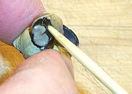

Probe under operculum

Follow the natural curve
Draw it all out
A done deed
Periwinkles are something you eat for entertainment while conversing with friends or listening to music. You'll pretty much starve if you depend on them for significant nutrition - they're tasty, but there's really not a lot in there, and what there is takes some effort to get out. While preparing this article I ate 151 of them and it was not at all filling. With practice you can eat about 150 an hour.
It may look like way too much trouble to eat them at first, but with just a bit of practice you'll be zipping the little critters out of their shells without even thinking about it.
It's best to buy your periwinkles from a reliable source with plenty of turn-over to assure a minimum of dead ones. Usually this will be an Asian market with circulating water tanks.
- determine if your periwinkles are alive or dead. Rinse them and pour them out into a tray, wet, but with no free water. Let them rest for a while. Most will relax and open their shells a bit. If they respond to a poke on the operculum (the door that closes the shell) they are alive. If they try to crawl away they're definitely alive. If they don't open up at all, turn them over for awhile and give them some time. They will not open if their shell is full of water. If they're dead, the operculum is usually pulled way back inside. A sniff test can often confirm that one is dead - discard dead ones. Commercially, "climb tanks" are used. The snails that climb are alive, those that don't are presumed dead. A recent purchase had 7 presumed dead out of 259 snails.
- Place the live snails in a large bowl, and fill with cold water to cover. Tumble them around with your hands for a minute or so, then drain. Repeat 2 more times. Cover them again with cold water and let them stay for 1-1/2 to 2 hours. Drain, rinse and drain again.
- Prepare a light sauce, maybe a lemon butter sauce with white wine. Dipping these tiny critters individually in a sauce is quite a hassle so you probably want to just cook them in the sauce. We have a recipe for Philippine Periwinkles in Coconut Milk with a more complex sauce.
- Bring the sauce to a boil and pour in the snails. Bring it back to a boil and simmer, tumbling the snails often, until they pull out of their shells easily, from 3 to five minutes.
- Strain the snails out onto a plate or shallow bowl. Pick them up individually and pry them out of their shells as shown in the photos. Go deep and in the direction shown in the first photo. You'll quickly get a hang of how to get under the operculum and draw them out against the natural curve of their shell. Some people suck on the shell aperture first, which may move the snail farther out.
- The last photo shows a disassembled periwinkle. The spiral part is the digestive organs, gonads and other items which you may eat or discard depending on your attitude towards such things. The firm black and white foot to the right is the meaty part. Remember to remove the operculum (the little disk to the upper right) before eating.
 This photo shows a Periwinkle Tool I made from coat hanger wire. It is
more effective than toothpicks for hooking the beast out of the shell,
but you'll still lose a few that slip too far back into the shell. The
hook on the business end has to be very short or it won't be able to
maneuver inside the shell.
This photo shows a Periwinkle Tool I made from coat hanger wire. It is
more effective than toothpicks for hooking the beast out of the shell,
but you'll still lose a few that slip too far back into the shell. The
hook on the business end has to be very short or it won't be able to
maneuver inside the shell.